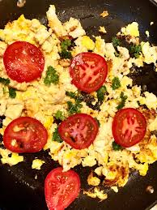

Tomato Basil Eggs

Introduction
I'm historically a picky eater, going through periods of liking or hating
foods entirely. Eggs are one food that I've gone back and forth on a
lot. I've never liked the texture of tomatoes, but I have, usually,
liked theflavor of them. It's certainly not an original recipe, but my mom's
version has been, in her words, the only consistent way to get [me] to eat
eggs
--especially when I was little.
Prep Time: 5 minutes
Servings: 2
| Ingredients |
Measurements |
Prep. Instr. |
| Tomato |
3 Medium/Large |
Sliced |
| Eggs |
6 Medium |
Will be scrambled |
| Basil |
5 big Leaves |
Lightly Minced, bonus points for fresh |
| Salt |
|
to taste |
| Pepper |
|
To taste |
Instructions:
- Place pan on the stove and set to medium heat. Once hot, add the
sliced tomatoes.
Cook until softened(some liquid, but not mushy--still some body to the
tomatoes)
- While the tomatoes are cooking: crack the eggs into a medium/large
bowl w/ salt and pepper, and beat them; cut up(lightly mince) the basil
- Once done, put tomatoes into a bowl and set to the side.
- Then, in the pan you cooked the tomatoes in, add the beaten eggs.
Scrammble with spatula until they look almost done.
- From here, add the tomatoes back in along with the basil.
- Finish the eggs, turn off the heat, and plate to serve
Tips, Tricks, and Things to Remember
- Be extra careful about when you add the tomatoes back into the eggs
, as it will make or break the meal.--To early, the eggs come out watery. To
late, the tomatoes will not combine with the eggs.
- Do your best to cut the tomatoes evenly, or else they wont cook
evenly and the texture won't be consistent.
- Fresh basil is always the way to go!(if you can)